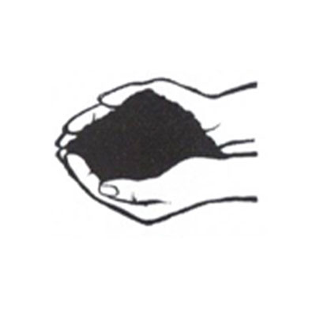
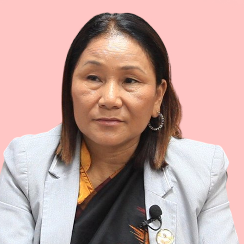
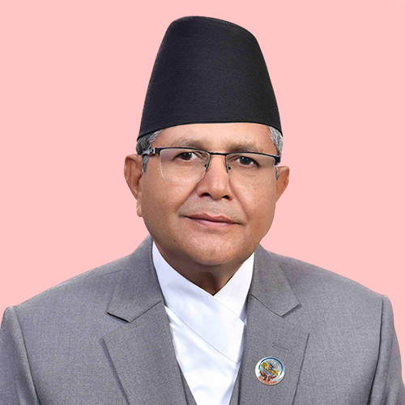
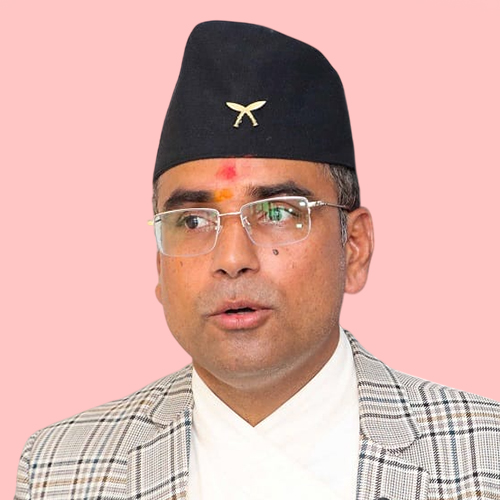
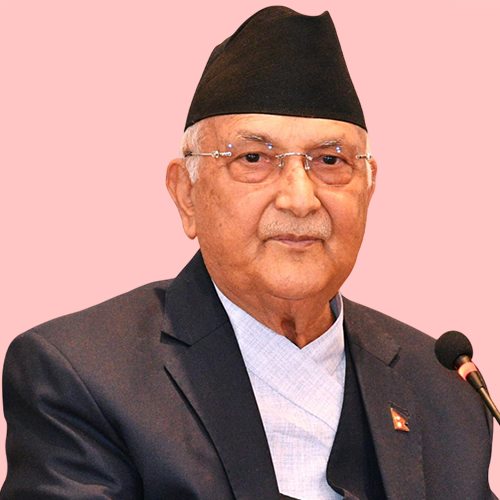
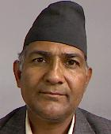
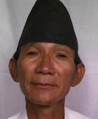
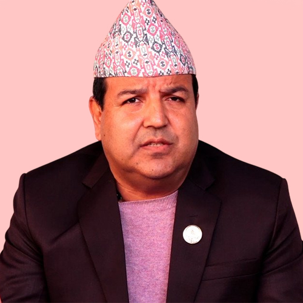
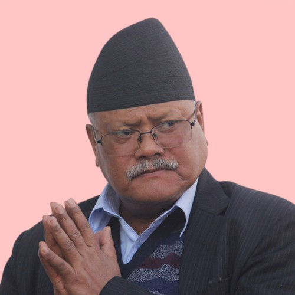
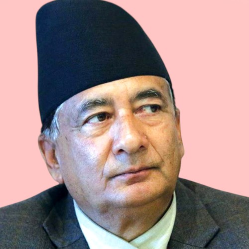

कोशी प्रदेशमा कुल मतदाता ३५७४२८६ रहेका छन्, जसमा पुरुष १८२८२१३, महिला १७४६०७३ र अन्य ० मतदाता समावेश छन्। यस प्रदेशअन्तर्गत ताप्लेजुङ, पाँचथर, इलाम, झापा, संखुवासभा, तेह्रथुम, भोजपुर, धनकुटा, मोरङ, सुनसरी, सोलुखुम्बु, खोटाङ, ओखलढुंगा र उदयपुर जिल्लाहरू रहेका छन्। कुल प्रतिनिधि सभा निर्वाचन क्षेत्र संख्या २८ रहेको छ।
















